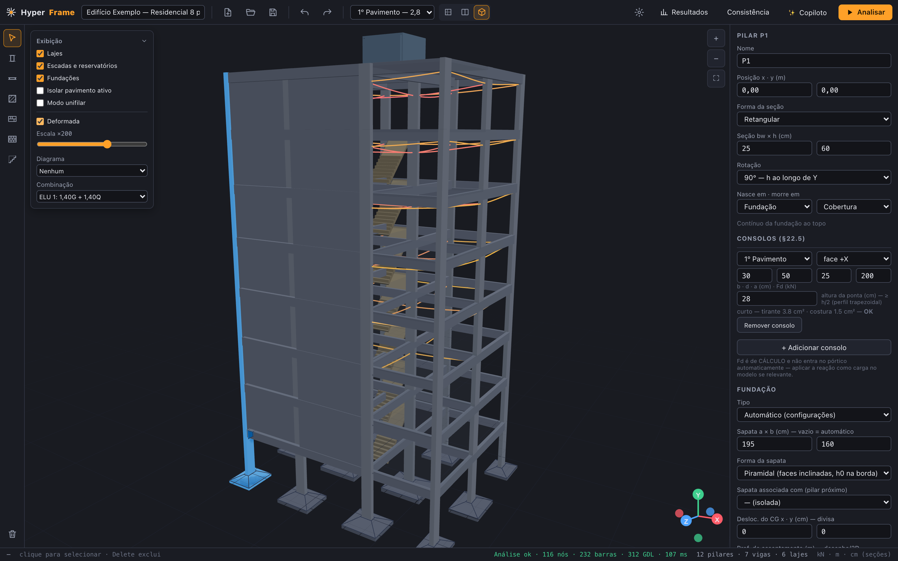
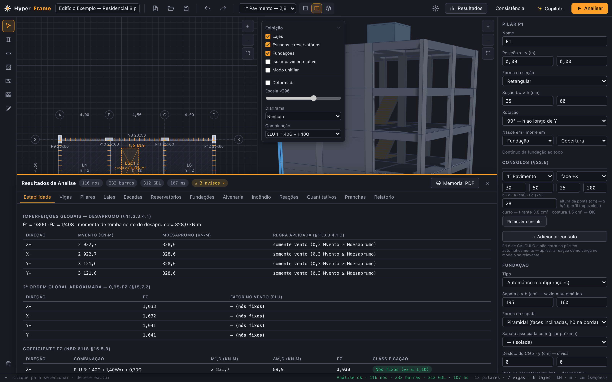
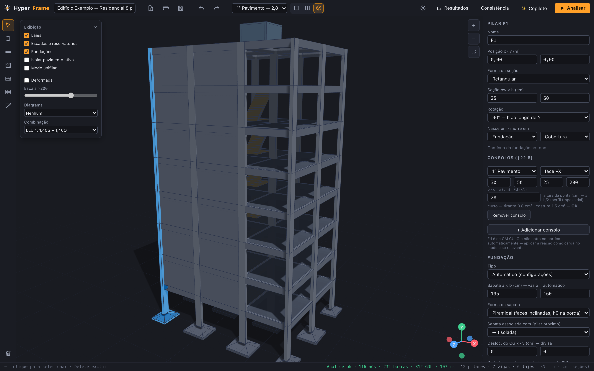
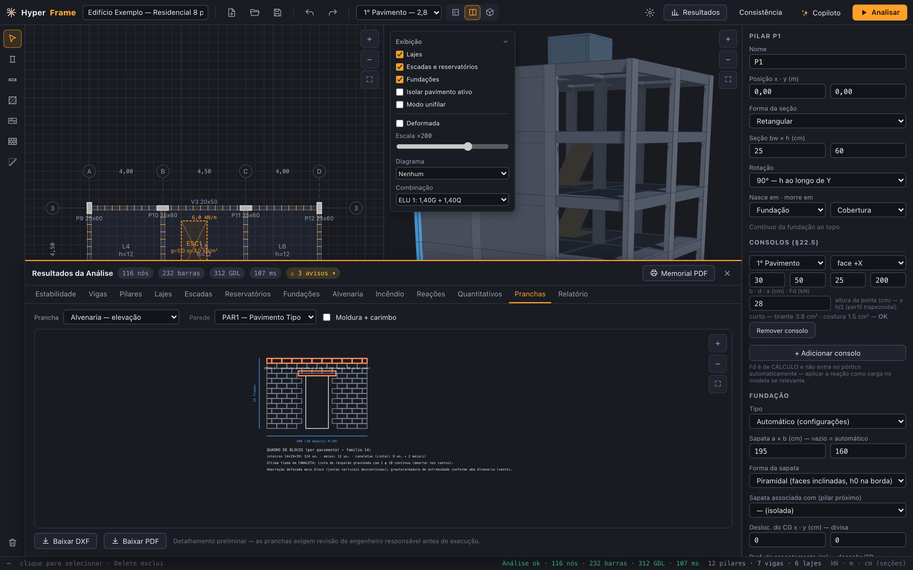

CAPÍTULO 01Instalação
macOS (Apple Silicon): baixe o .dmg na página inicial,
arraste o HyperFrame para Aplicativos. Na primeira abertura o macOS pode avisar que o app
"está danificado" — é o Gatekeeper com apps de fora da App Store. Resolva com um comando no
Terminal:
xattr -cr /Applications/HyperFrame.app
ou em Ajustes → Privacidade e Segurança → "Abrir Assim Mesmo".
Windows 10/11: baixe o instalador .exe e execute. O SmartScreen pode
pedir confirmação ("Executar assim mesmo") porque o binário ainda não é assinado.
Cada download tem o sha256 publicado ao lado do botão — confira se quiser verificar a integridade. O app inteiro tem ~3 MB e funciona 100% offline; não existe conta, licença nem telemetria.
CAPÍTULO 02Conceitos: níveis e plantas de forma
Um projeto HyperFrame é organizado como um edifício de verdade:
- Níveis — elevações do edifício (Fundação, Térreo, Tipo, Cobertura…), cada um com o seu pé-direito. O nível 0 é a fundação.
- Plantas de forma — o desenho estrutural de cada pavimento. Vários níveis podem compartilhar a mesma planta (o "Tipo") ou ter plantas próprias (térreo ≠ cobertura).
- Pilares — contínuos, nascem e morrem em qualquer nível (transferência em viga é suportada, com aviso).
O editor abre com uma planta 2D à esquerda e o 3D sincronizado à direita: o que você seleciona num, acende no outro. O gerenciador de plantas/níveis fica na barra superior.

CAPÍTULO 03Lançando a estrutura
A barra de ferramentas à esquerda tem os elementos, na ordem natural de lançamento:
- Eixos — trace a malha de eixos com bulbos (A, B, C… / 1, 2, 3…). Tudo depois "snapa" neles.
- Pilares — clique na posição; ajuste seção (retangular, circular ou em L), rotação e níveis de nascimento/morte no inspetor.
- Vigas — polilinha de apoio em apoio (snap + orto ajudam). Seção por trecho, furos na alma e trechos curvos por flecha (balcões) no inspetor.
- Lajes — clique dentro de um contorno fechado de vigas: a laje é detectada sozinha. Defina espessura, tipo (maciça/nervurada) e cargas de revestimento/uso.
- Extras — escadas (retas, L, U), reservatórios, consolos nos pilares, furos de laje (shaft/elevador), muros de arrimo, radier e paredes de alvenaria estrutural.
Antes de analisar, rode a verificação de consistência — ela aponta avisos graves (laje sem apoio, pilar sem descarga…) antes que virem erro de análise.
CAPÍTULO 04Cargas, vento e sismo
Peso próprio é automático. As demais cargas ficam nos elementos (laje: permanente + acidental com presets da NBR 6120; viga: alvenaria por trecho) e nas Configurações (ícone de engrenagem):
- Vento (NBR 6123) — V0 por cidade (ou manual), S1/S2/S3, com desaprumo global combinado pela regra da norma e excentricidade de 7,5% torcendo o diafragma.
- Sismo (NBR 15421) — zona sísmica (ou ag do mapa), classe do terreno A–E, categoria de utilização e sistema sismorresistente (R/Cd). Método das forças equivalentes ou espectral (SRSS dos modos com a regra 0,85·H). As forças entram no pórtico como casos EQ± com torção acidental de 5% e combinações excepcionais da NBR 8681 — o sismo dimensiona, não só verifica.
- Combinações — geradas sozinhas (ELU/ELS da NBR 8681 + excepcionais quando há sismo). ψ da sobrecarga configurável.
CAPÍTULO 05Análise
Clique em Analisar. O HyperFrame gera o pórtico espacial (6 GDL/nó) com diafragma rígido por pavimento, roda dois passes de rigidez (ELU fissurada §15.7.3 e ELS integral), extrai os modos de vibração (períodos e massa efetiva) e resolve todos os casos e combinações — em segundos, num Web Worker que não trava a interface.

A estabilidade global sai completa: γz e α (§15.5), majoração 0,95·γz (§15.7.2) e P-Δ iterativo real — o fator adotado é o maior dos dois, válido além de γz = 1,30.
CAPÍTULO 06Lendo os resultados
O painel de resultados tem abas por assunto — cada verificação com o § da norma:
| Aba | O que mostra |
|---|---|
| Estabilidade | γz, α, P-Δ, desaprumo, modos de vibração e sismo (drifts, θ) |
| Vigas | flexão (mesa colaborante), cisalhamento, torção, flechas, fissuração |
| Pilares | flexo-compressão oblíqua, esbeltez, pilar-parede §15.9 |
| Lajes | Marcus ou grelha, punção §19.5 completa, vibração de piso §23.3 |
| Fundações | sapatas/blocos/tubulões, viga alavanca, §7.7 em desnível |
| Alvenaria | fpk por pavimento, paredes/grupos, cisalhamento de contraventamento |
| Relatório | memorial de cálculo completo pra anexar na ART |

CAPÍTULO 07Fundações — inclusive terreno em desnível
Escolha o tipo global em Configurações (sapatas, blocos sobre estacas ou tubulões) e o HyperFrame dimensiona da sondagem SPT que você digitar. Depois, edite por pilar no editor de fundações: fixe a×b ou nº de estacas (vira verificação), desloque o CG (divisa), associe dois pilares numa sapata ou crie viga alavanca.
Aclive e declive (cota de assentamento)
Cada sapata pode ter a própria cota de assentamento. Não é só desenho: o apoio do
pilar desce até a cota da sapata e um tramo de arranque entra no pórtico — a rigidez e
a esbeltez sentem o desnível. E a verificação da NBR 6122 §7.7 confere cada par de
sapatas vizinhas em cotas diferentes: a reta entre bordos deve fazer com a vertical pelo menos
60° (solos pouco resistentes), 45° (resistentes) ou 30° (rocha) — o app mostra o afastamento
mínimo a = Δh·tan α, quem passa e quem precisa afastar/aprofundar, e lembra a
regra executiva: a mais profunda primeiro.

CAPÍTULO 08Alvenaria estrutural (NBR 16868)
A parede estrutural é um elemento do editor (ferramenta própria): bloco de concreto ou cerâmico, 14 ou 19 cm, com fpk de prisma por pavimento — a especificação que vai pro fornecedor. O app acumula as cargas, verifica compressão (NRd = fd·t·[1−(λ/40)³]), grupos com aberturas, contraventamento ao vento com graute calculado, e a transferência pra torre híbrida (parede morrendo sobre viga de concreto, com efeito arco).

CAPÍTULO 09Pranchas e memorial
Na aba Pranchas: armação executiva de vigas (cortes pelo diagrama real), pilares em elevação com arranques e emendas, lajes em planta, fundações detalhadas, elevações de alvenaria — tudo com carimbo ABNT em A1/A0.
- PDF vetorial 1:1 — a cota do carimbo é a cota do papel. Teste com régua na primeira impressão.
- DXF R12 — abre no AutoCAD pra finalização no seu padrão.
- Editor de armaduras — mude n/φ/passo por posição; o app recalcula e avisa se o As efetivo ficou abaixo do necessário.
- Memorial — 15 seções, das combinações à flecha diferida, pronto pra ART.
- Quantitativos — concreto, fôrma e aço com preços editáveis e custo por m².

CAPÍTULO 10Copiloto IA
O chat integrado lê o seu modelo e propõe edições — que só acontecem com a sua aprovação (toda mudança vira uma proposta com antes/depois). Configure com a sua chave da API da Anthropic (Claude) ou aponte pra um modelo local via Ollama — nesse caso nada do seu projeto sai da sua máquina.
Exemplos do que pedir: "aumenta a V3 pra 19×60 e recalcula", "por que o P7 reprovou?", "verifica a consistência e me resume os avisos".
CAPÍTULO 11Dicas e atalhos
- Undo/redo ilimitado (⌘Z / ⌘⇧Z no Mac; Ctrl no Windows) — vale pra tudo.
- Snap e orto nas polilinhas de viga; clique nos eixos pra alinhar de primeira.
- Seleção cruzada — selecione no 2D e veja no 3D (e vice-versa); isole um pavimento pra trabalhar limpo.
- Zoom por scroll/pinça e pelos botões (2D e 3D).
- Autosave — o projeto atual persiste sozinho; use Arquivo → Salvar para gerar o
.json(formato aberto e documentado — seus dados nunca ficam reféns). - O projeto de exemplo embutido é um bom ponto de partida pra explorar os painéis.
CAPÍTULO 12Confiabilidade e limites
Cada módulo de norma tem testes com âncoras calculadas à mão (476 hoje) e o § citado no código — o repositório é aberto pra conferência. A validação cruzada com softwares consagrados está em andamento (VALIDATION.md).
Limites atuais que você deve conhecer: concreto armado moldado in loco (sem protensão nem pré-moldados por enquanto), lajes entram como carga+diafragma na análise global (a grelha unificada cobre a distribuição), e os resultados não substituem a análise crítica do engenheiro responsável. Dúvidas e bugs: issues no GitHub.